编写进度
时间(精力)管理
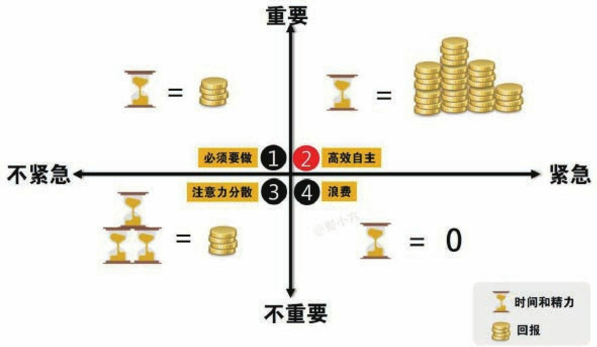
时间管理的本质是注意力和精力管理
保持充分的自律，从容的生活节奏，才是节约时间的最好方式
- 把零碎的事项放到零碎的时间去做。
Why -> How -> What
知识管理
在碎片化时代的知识管理，重点是对加工知识的大脑进行管理，而不是对承载知识的文档和文章进行管理。
知识管理最高境界: 输出、包括写作输出(育人)
知识晶体就是一些结构性的东西，它不是一些碎片，而是一个框架、一个思维模型
知识分类
- 事实性知识: 分离、孤立的、信息片段式的知识
- 记忆(思维导图、记忆宫殿)
- 概念性知识: 含有名词概念、模型、原则、原理/理论性等以结构化的形式组织起来的知识
- 了解知识的来龙去脉
- 知识间的联系
- 知识的前提条件
- 类比和比喻
- 程序性知识: 关于做某事需要遵循一系列步骤形式的知识。
- 流程化: 书面树立程序性知识的流程图
- 刻意用: 有意识地应用流程步骤
- 一般化: 提炼出更具一般性的流程
三个阶段
知识管理三个阶段:
收集并分类学习材料(知识、信息、经验)
- 知识仓库:
- 具有便捷性、索引性、检索性，
- 例如：微信、印象笔记、有道云笔记、为知笔记
- 知识体系:
- 使用Emacs/OneNote/Joplin
联系经验、加工整理，在应用中学习，构建知识体系
通过输出升级表达、解决复杂问题、促进他人成长
知识体系
能够让人有稳定的根基和框架，树立成长思维，批判思维和系统思维。
个人知识体系
个人知识系统框架中所有知识一定都指向同一个应用目标
- 以解决问题为中心，促进应用，创造价值
学科知识体系
为了尽可能覆盖这个学科所有的内容，没有一个共同的应用目标
- 以知识学习为中心，指导科研，树立框架，撰写论文
构建知识体系，看书 vs 网络
信息/知识的碎片化不是问题，能否对信息进行分析和整理才是关键
- 若学习能力差, 看书和看手机没区别
- 若学习能力一般, 针对尚无基础的领域，看书比看手机好
- 若学习能力较强, 在该领域发展了属于自己的体系, 看书和看手机都可以把知识拆为己用
虽然书中信息确实比网络信息更加体系化，但书上的体系和自己的体系不是一回事
得意时信儒、失意时信道、绝望时信佛
林语堂
- 笔记场景
- 速记式-微信
- 流程式-excel
- 梳理式-思维导图
- 学习式-OneNote
- 总结式-图表化输出
学习
学习是在以原有的经验和知识为基础，
通过与外界的互动，
主动生成信息构建新的理解的过程。
最好的学习方法 就是教会别人,是帮自己更快、更深、更系统地掌握知识与技能的一种方法
学习途径
学习的四种途径: 网、书、人、事
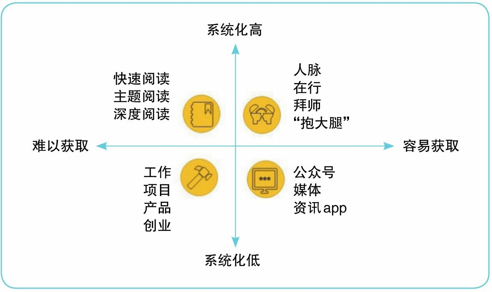
分享是反复的学习过程
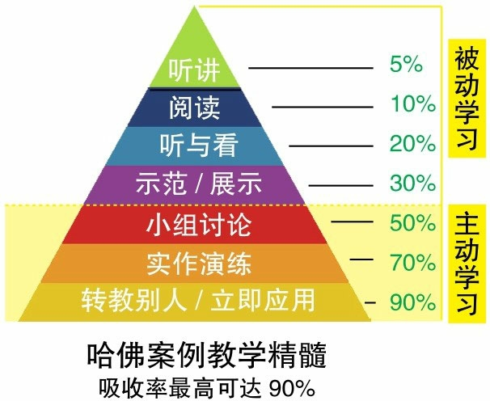
学习策略
在搭好整体框架的基础上，紧紧围绕工作需要，先学急用的和基础的内容。
在时间和精力允许的条件下，再填充框架中其他空白的部分。
这个填充过程可能是几个月，也可能是几年，甚至一辈子。
将工作和学习合二为一，再工作中练习和重复技能，直至达到熟练和精通的程度。
功利性学习(带着问题意识)： 从工作的实际需要出发，学习后立马应用
- 选问题: 工作中需要解决的问题
- 定范围: 确定学习内容的范围和顺序
- 实际用: 应用所学内容解决问题
搭建高质量框架: “宏观”输入知识，需要掌握信息的结构化思维，懂得何如从一大段信息中迅速提炼出”框架”
- 整体性: 将知识以本质的内在联系组织为一个整体，并服务于一个根本应用目标
- 调整性: 自身具有很好的调整性
- 转换性: 目标改变，框架可同步转换以支撑新目标的实现
框架可迁移: 跨界生存
- 组织好先前知识和先前经验
- 条件化知识，在多样化情况中应用
- 多知识做高层次的抽象
最佳学习状态
- 专注 将脑与心全部投入到当前的知识上，并且始终保持着知识输入与加工的运动状态
最佳学习方式
- 在**情境(任务框架和特定条件)**中,
- 对知识的输入、加工和输出,
* [ ] 清楚地**构建出自己原有经验的知识体系框架**。 - 在每次学习新知识时，再对原有框架加以增补和修正。
- 对知识的输入、加工和输出,
费曼学习法: 大脑真正的输入，是它对知识的输出。(让输出来倒逼输入)
如果想真正掌握一门知识，最好以论述题而非选择题的方式来让自己做练习
唯有以**理解为目标(标准)**输入知识，才能把知识有效地学进去
学习的过程
学习者主动构建知识的过程
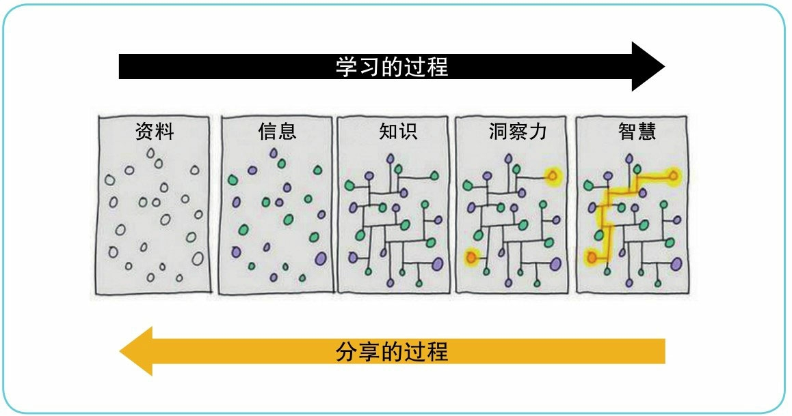
体系化碎片式学习
碎片阅读: 在碎片化的时间里，以自己碎片化理解的方式去学习碎片化的内容,并融合到自己的知识体系中
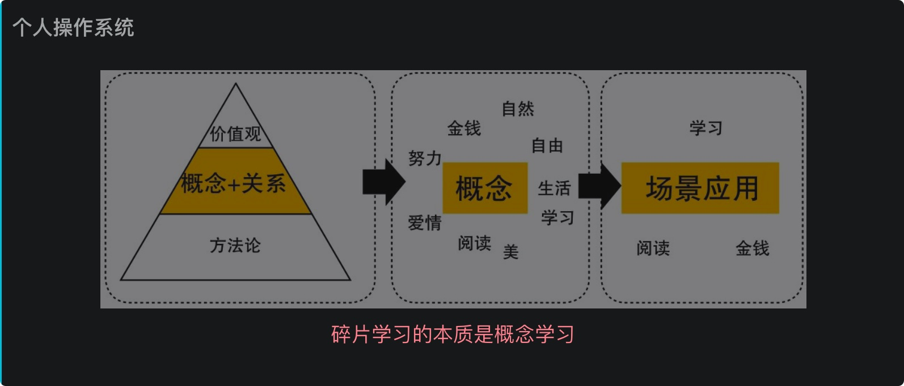
聚沙成塔/搭建自我知识体系的有效工具——Anki卡片法/便签法
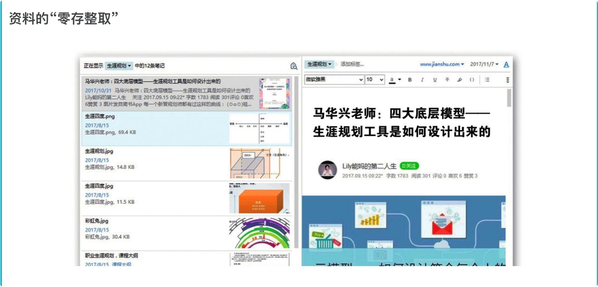
知识不仅需要系统的输入,还需要零碎的积累和补充。
先有知识框架，再碎片化学习丰富框架细节，深化理解。
- 前提: 建立在主动、切实实践的基础上
- 首先: 建立知识体系框架
- 然后: 碎片化输入、体系化积累
- 最后: 层次化、立体化知识体系框架
学习框架/职场跨界
对三大学习策略（框架、可迁移、功利性学习）的综合运用
1-构建框架
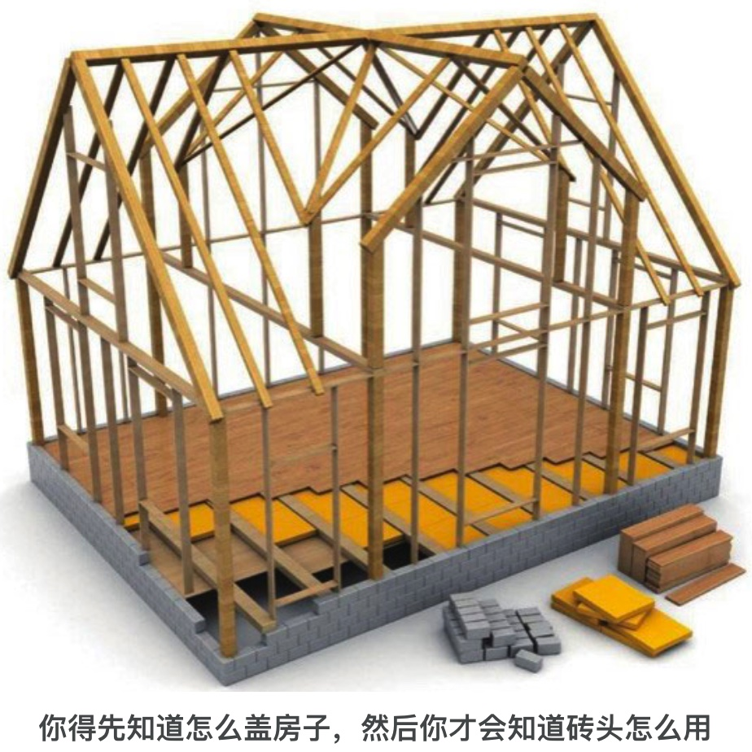
- 三种方法
- 请教业内有深刻理解/丰富经验的人对这个行业建立的整体认知框架
- 参加培训
- 阅读经典书籍
2-对比迁移
在对照整体框架做迁移时，对比的是知识和技能，而不是能力和素质。
能力和素质与行业无关。
3-功利性学习
优先学习优先级:
- 新行业必备的基础知识和技能
- 与工作需要迫切程度一致
- 根据工作类型确定学习的深度
搜索技巧
整个检索过程：
从搜索引擎角度思考，先关键词检索，再调整，再检索
- 搜索语法:
- 空格”与” “北京 冬奥会”
- 包含任意关键词(|)
- 排除关键词(-)
- 包含完整关键词(“”)
- 文学影视作品 (《》)
- 限定网站site:
- 限定文件类型filetype
- 限定关键词在url中（inurl）
- 限定关键词在标题中(title)
阅读技巧
- 阅读方法
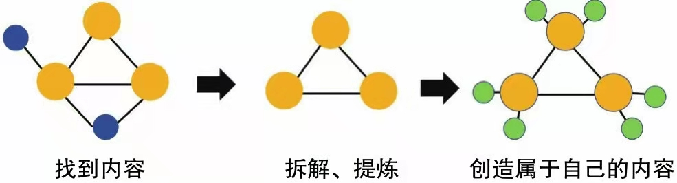
- 提炼- 拆解提练: 核心内容和知识体系
- 链接- 关联自己的经验
- 融合: 组块化存储，模型式归档
4-整体应用
对新学的知识和技能做最大限度的应用
5-改进迭代
无论是个人理解和应用出了问题，还是应用前提不一致，或者理论不完善，都要根据实践结果做出改进，裁剪出适用于自己的方法，以便下次应用得更好
名言：
一本书能让失眠的人睡去，也能让沉睡的人醒来；
有多少书，能让我们看清这个世界，成为我们看不见的竞争力；
又有多少书，能让我们在看清这个世界的同时，仍旧热爱这个世界。
自由不是随心所欲做想做的事情，而是有能力可以不做”不想做”的事情
所以实现自由并不是靠勇气，而是靠能力
任何决策都可以用利益来衡量
你说你没有办法坚持每天早起，只不过是因为早起带给你的收益远远小于你睡觉的收益。
价值观念：
- 复利
- 在成人的世界里，没有好坏，只有利弊
- 机会成本: 花时间和精力做了A事，就没法做B事，那B事所产生的收益就是机会成本
- 沉没成本
- 能用钱解决，千万不要用人情
- 免费是最贵的
- 学习是回报率最高的投资
- 学什么不重要，重要是你的知识和服务有没有人愿意付钱
高智学习，是搞清楚事物之间的因果关系，并且总结出模型、规律，应用到不同的场景。
低智学习，通过试错、模仿来学习，获得经验。
知识变现: 本质是信息不对称，你要比别人先察觉、先尝试、先理解、先分享。
其他
金字塔
马斯诺需求金字塔
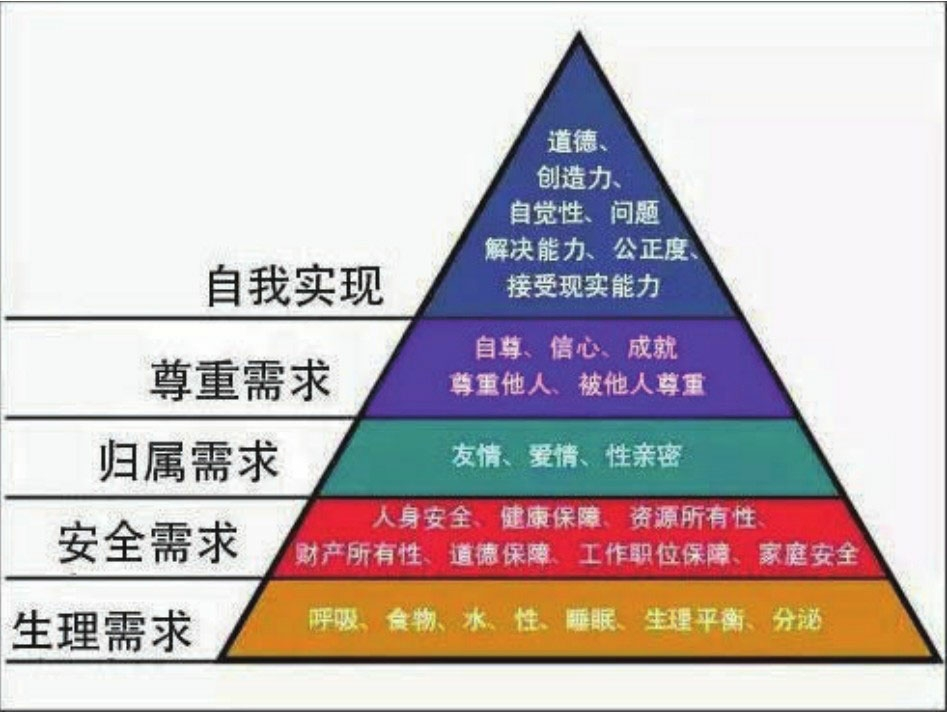
知识、技能、与能力的区别
- 知识是客观存在的
- 技能是某种工具的使用方法、某个具体工作的完成技巧
- 能力是比技能更加深层和通用的存在
培养思维
要想教给人们一种新的思维方式，不要刻意去教，而应当给他们一种工具，让他们通过使用工具培养新的思维模式。
习惯养成
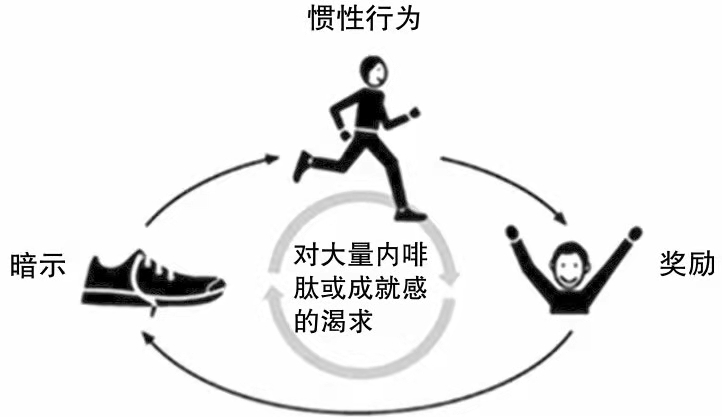
思想 -> 行动 -> 习惯 -> 性格 -> 命运
学习资源
- 学习资源：真正有效的信息绝不会多到需要囤积。囤积学习材料不能于学习知识，例如网盘学习法
- 正确使用材料的方法：一定坚持看完文章，做好笔记，深入理解，再视情况进行知识整理
- 真正有效的知识绝不会过于复杂，复杂的往往知识市面上衍生材料的营销手段。
记忆
瞬时记忆与长期记忆
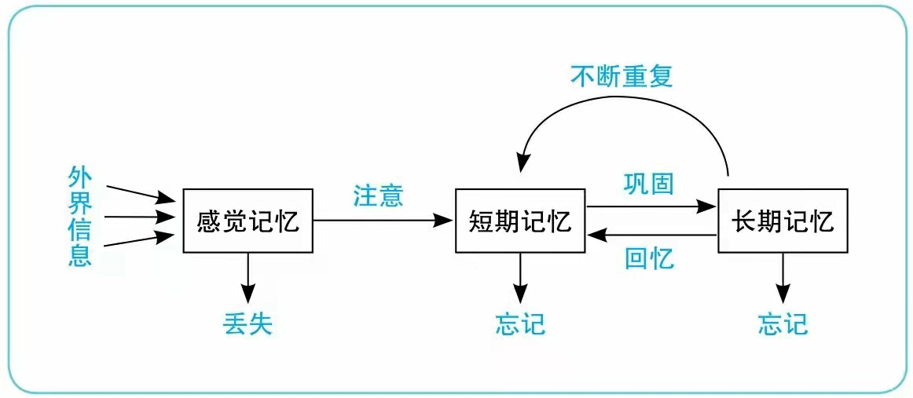
记忆宫殿
利用人类的内视觉记忆，通过想象在脑海中看到的虚幻画
外视觉是我们通过肉眼可以看到的真实世界
万物皆可桩
记忆模式: 记忆宫殿= 地点+记忆影像
思维导图一般用于整理信息，梳理书本的脉络
记忆宫殿用于对树上各个知识点的具体记忆
记忆：信息和头脑中固有的知识形成了密切的联系
三层定桩法
元桩: 先找10个房间，每个房间找10个记忆点
基础桩: 用元桩记忆100幅图像，每幅图像找10个地点
注意点：
- 记忆桩之前不能有视觉上的阻挡
- 顺序记忆
各类技能学习应用技巧
行为技能:
强调身体熟练度的技能，核心在于熟能生巧理解性认知技能
强调理解的深度，要求能够抽象出更一般的规律程序性认知技能
要求先理解，后重操作
程序性认知技能学习
误区:
- 理解完全后再上手
- 完全不经理论指导直接上手
简单入门 -> 迭代深化 -> 自然重复
理解性认知技能学习
误区:
- 靠直觉而非成熟的框架入门
- 死搬理论，不知变通和改进
选用框架 -> 生搬硬套 -> 质疑改进
行为技能学习
误区：
- 靠直觉而非模仿专业示范入门
- 盲目模仿,没有量力而行
- 一味重复,没有细化改进
挑选对象 -> 量力模仿 -> 分解简化 -> 局部细化
相关概念
鸡尾酒效应
在喧闹的场合突然叫你的名字，你会马上反应过来心流
个体注意力完全投驻在某种活动上的感觉绿灯思维
不要等到这条街上的绿灯全部都亮你才开车，而是这段路上的绿灯亮了，你往前进一点，看到红灯就停下，等待下一个绿灯稻草战略
以小博大，一点一点去换冠军战略
尽可能在一个戏份领域突围成为第一人抽签盒战略
不要怕失败，多做尝试，寻找自己擅长的领域
5W2H方法
When Where Who Why What How How muchRIA便签法
便签一：自述知识
便签二：述自经验
便签三：如何应用
复盘思维
尽早及时地进行”回想”式复习
参考书籍
- 学习力:颠覆职场学习的高效方法
- 这样读书就够了 个人学习力升级指南
- 高效学习法:名校学霸教你把学习变得轻而易举
- 颠覆平庸 如何成为领先的少数人
- 洋葱阅读法
转载请注明来源，欢迎对文章中的引用来源进行考证，欢迎指出任何有错误或不够清晰的表达。可以在下面评论区评论，也可以邮件至 askding@qq.com